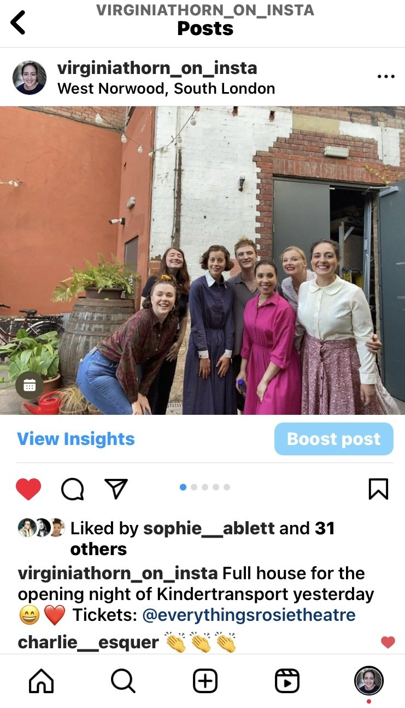
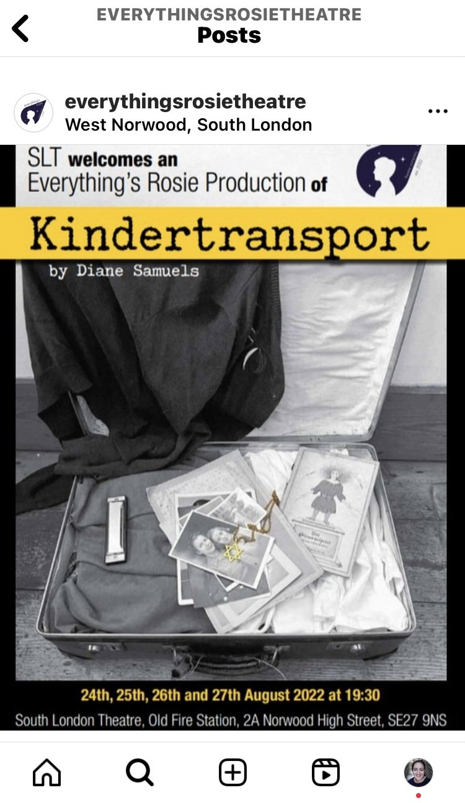
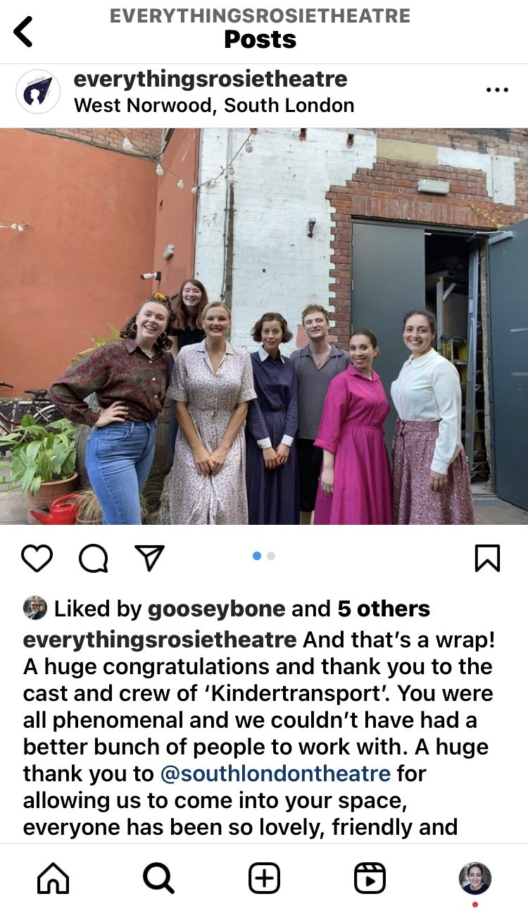
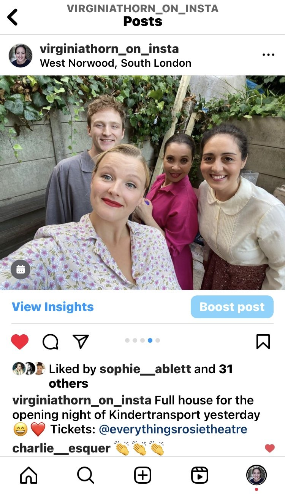
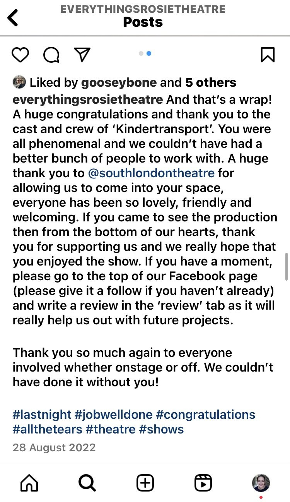

I had the joy of playing Lil Miller in Diane Samuels' Kindertransport in a run at The South London Theatre produced by Everything Is Rosie.
We inhabited the story of Eva, a young girl evacuated from Nazi Germany and placed with a foster family in London. My character Lil serves as Eva's foster mother, and our relationship becomes central to the story's emotional arc.
The play traces Eva's journey across three life stages: childhood, adolescence, and adulthood. As an adult, Eva has renamed herself Evelyn and rejected her heritage. When her daughter discovers old letters and photographs in the attic, Eva confronts her past and reveals a dark secret about the lengths she has gone to to keep everything hidden.
The production explores themes of displacement, identity, and the psychological toll of denying one's origins.



